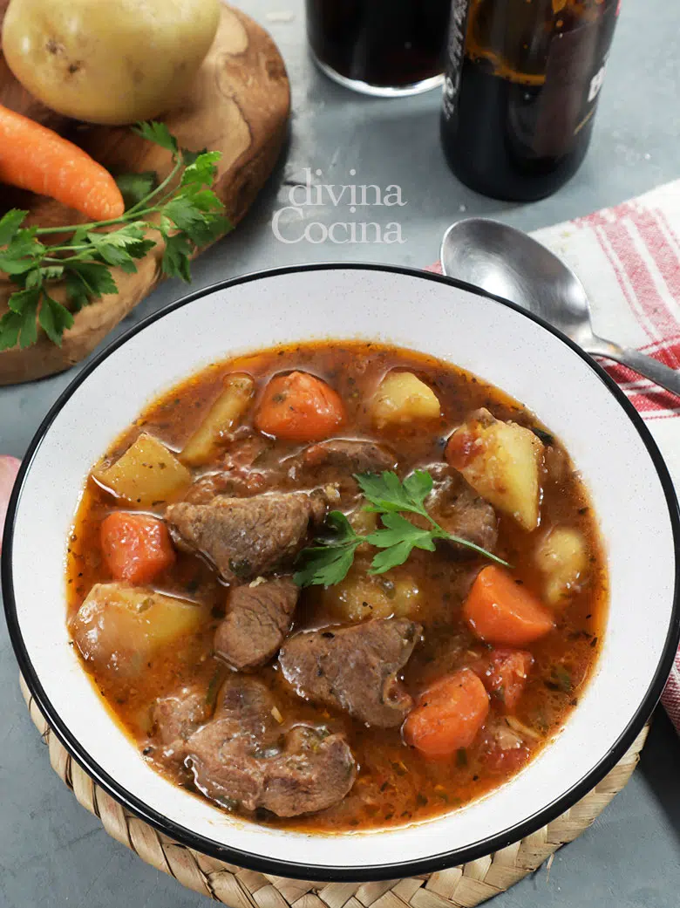

Estodafo irlandes a la cerveza

Esta receta de Estofado Irlandés a la Cerveza es un clásico local, sabroso y sencillo, que
suele prepararse con ternera o cordero
Ingredientes
- 400 g de ternera troceada para guiso, un corte meloso como el jarrete (también se puede usar cordero)
- 2 papas medianas
- 1 cebolla pequeña
- 4 dientes de ajo
- 1 tomate maduro (0 200 ml de tomate triturado)
- 2 zanahorias
- 333 ml (1 lata mediana) de cerveza negra
- Medio litro de caldo de carne o ave casero (también puede ser de pastilla)
- Harina
- 1 hoja de laurel
- Sal y pimienta negra.
- Aceite de oliva
- Perejil picado, y unas hierbas aromáticas (tomillo, mejorana…)
Paso a paso
- Para empezar enharinamos ligeramente los trozos de carne y los doramos un par de minutos al fuego en un fondo de aceite. Ponemos también las hojas de laurel y unas pimientas negras enteras.
- Una vez hecho esto espolvoreamos con sal. Añadimos las zanahorias en rodajas, la cebolla cortada más buen gruesa y los ajos pelados y enteros. Lo revolvemos todo y añadimos la cerveza.
- Tenemos que esperar que reduzca el alcohol a fuego fuerte y a que se concentre un poco la salsa.
- Cuando vemos que el alcohol ya ha evaporado, incorporamos el tomate y dejamos unos 5 minutos a que tome color y reduzca.
- Después cubrimos el guiso con caldo, añadimos las hierbas aromáticas y tapamos la cazuela.
- El guiso debe hacerse a fuego lento durante al menos una hora, o el tiempo necesario para que la carne enternezca. Si va perdiendo líquido se rectifica para que no quede seco.
- Podemos hacer el guiso en olla exprés para ahorrar tiempo. Lo tendremos en una media hora.
- Cuando la carne esté tierna añadimos las patatas troceadas y terminamos el estofado mientras se enternecen las patatas.
- Hay que probar de sal por si es necesario rectificar. Espolvoreamos con perejil picado y dejamos reposar unos 15 minutos antes de servir.